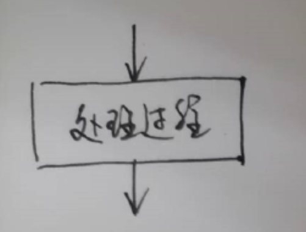
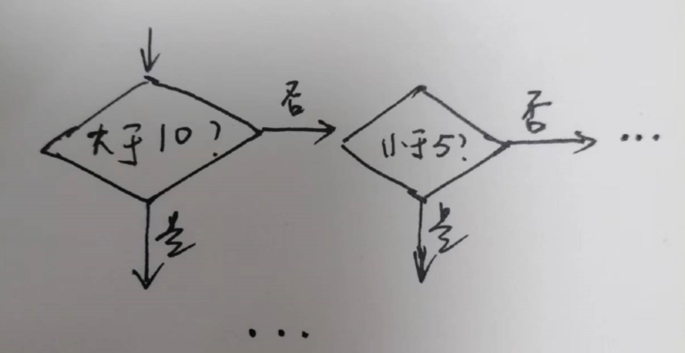

在上篇 《基础语法》中，我们了解到，编程语言由 语法 和 流程控制 组成。
了解了基础语法之后，我们就能大体看懂代码的结构，如果要实践的话，还需要知道如何控制程序的流程。
今天我们将会了解：三个流程控制单元，以及如何进行流程可视化。
开场白
学习过编程的读者，可能会发现，我们的讲述过程有点不同，没有一开始就对 Python 语言的特性，逐个展开，而是花了很大的力气，从对编程的认识，基础设施，基本概念讲起，甚至和 Python 本身的关系并不大。
之所以用这样的方式展开，是因为编程语言都是大同小异，相通的，而我们讲述的内容，与其说是某个编程语言的特性，倒不如说是编程技能的共通特征。
为什么需要讲共通特征，而不是专用特性呢？
有两个原因：
- 编程语言的通过特征是编程技能的核心和基础，是一个纲，只要了解这些基础，就不会被纷乱复杂的语法特性所迷惑；
- 要想编程技能真的对工作生活有用，必须了解不至一个编程语言，比如未来我们实践网络编程时，需要了解 Javascript，数据处理时需要了解 SQL 等等，而共通特征能帮助我们更高效地习得不同的编程语言。
所以，我们需要抓住根本，了解原理，掌握本质，就像笑来老师的《财富自由之路》中一样，很大的篇幅在带领我们了解一个个基本概念，而看似与财富关系不大的概念，才是真正构成获得财富自由的基础，掌握和正确认知这些概念，是获得财富自由的前提。
好了，回到我们的话题是编程技能的话题上，来看看什么是 流程控制。
无论多么复杂的流程、过程、执行方式，都是由三种基本流程单元组合而成的：
顺序、分支 和 循环。
只要掌握了这三种流程控制单元，无论学习哪种编程语言，都能轻松入手。
顺序
顾名思义，顺序就是按照先后顺序依次执行。
先后顺序一般是从上到下，从左往右，和我们的书写阅读顺序一致，是一个自然的、简单的流程单元。
在《基础语法》中对 块结构 的了解，我们知道，Python 中，只要缩进单位一致的代码，都是顺序执行的，比如：
1 | inputValue = input("请输入:") |
input是内部方法，可以引导用户在命令行中输入；print我们之前了解过，就是向终端输出一段字符。可以支持多个参数，如果有多个参数，会将参数们拼接成用一个空格分隔的字符串做输出；len是内部方法，用于计算字符串的字符数，或者列表（数组）的元素个数，后面介绍列表对象时会详述如果在写顺序结构时，没有做到相同单位的缩进，编译器就会报缩进异常的错误。
如果不保持一致的缩进，还能不能顺序执行呢？
比如在交互模式中，输入一个 tab，再输入一个语句：
1 | inputValue = input('请输入：') |
就会发现，编译器报错了，提示缩进结构有问题。
虽然 Python 有缩进敏感的特征，看似没有其他语言那么自由，但是这个特征会帮助我们写出更符合格式规范的代码。
要知道，因为书写不规范，而造成问题排查难度的增加，太大了。参见《编程，真不难》中的描述。
比如，下面两段 Javascript 代码：
1 | // 第一段 |
两段代码效果完全一样，但第一段因为有乱入的缩进，其表现形式和真实含义，会有所冲突，要正确理解会更困难。
分支
分支的本质就是判断和选择，在一个路口，是向左走还是向右走。
由于不同的选择，使得最终的执行流程呈现不同的结果。就像我们的人生之路，因为选择不同，而大相径庭。
分支逻辑，由 判断条件，和 与判断条件对应的内容 组成。
比如，出门时，
如果下雨，带上伞，再出门；否则，直接出门。
这里的 下不下雨 是判断条件，带不带伞，是条件所对应的内容。
那么 Python 中如何表示这个分支逻辑呢？
首先，得认识几个用于判断逻辑的 关键字: if、else、elif。
if就是 如果 怎么怎么样，引导一个判断条件，并期望结果为是；else否则 怎么怎么样，即if引导的判断条件结果为否的程序分支；elif是else和if的合体，表示 否则如果
通过这三个关键字，就可以组合成任何分支逻辑了。
比如我们要表达这样的一个分支逻辑：
如果输入的值 大于 10，输出 1；否则如果等于 10，输出 0；否则 输出 -1。
用判断关键字，可以写成这样：
1 | if value > 10: |
其次，需要了解用 逻辑表达式 构成的判断条件。
比如上面，value > 10 就是判断条件。通过 逻辑表达式 可以得到判断结果，判断结果是 布尔值，即真(True)和假(False)。
Python 中，判断条件的结果不一定必须为布尔值，也可以是其他值。比如数字，字符串，数组等等，Python 的处理逻辑是，如果值不为空或者零，即为真。因此，在实际应用中需要注意，在具有用到的地方，会详述。
常见的逻辑运算符有：
==、!=、>、<、>=、<=
除了逻辑运算符，还有逻辑运算关键字：and、or、not。
这些关键字，可以将基本逻辑表达式链接起来，表达复杂的逻辑关系。比如 value > 10 or value < 5，当 value 大于 10 或者 小于 5 时，表达式的结果为 真。
总结一下分支结构：
1 | if [条件1]: |
不需要死记硬背，只要根据业务逻辑的结构，灵活应用就好了，想想我们遇到的各种事情，都可以用分支结构来表示。
循环
循环就是不断地以大致相同方式，对一系列事物的处理过程，比如从一堆数字中，挑选出质数、在电脑上查找一个特定文件等。
从直观上理解，对于一个循环过程的话，像分支结构一样，也需要个条件，就是循环次数，或者是否可以终止循环。如果没有条件，循环将永远地执行下去。
对应着两种条件，Python 中有两种循环形式，分别是 for 循环 和 while 循环。
for 循环
for 循环，具有限定循环次数的功能，即可以给循环指定执行次数。
比如我们统计一下消费明细清单，下一篇文章中，我们将实践一个统计的例子，也会用到 for 循环。
Python for 循环如何表达呢？看一个例子：
1 | for i in range(3): |
这段代码中，指定了循环次数为 3 次。
for、in 是关键字，range 是一个内部方法。
range 函数接受一个整数类型的参数，用于设置循环次数，指定和循环次数后，range 就会产生一个从 0 开始的一个正整数序列，例如 range(3) 将产生 3 个从 0 开始的元素序列： 0、1、2。
代码中，for 后面的 i 是一个变量，每次循环 i 中存放的值就是当次循环的序列元素值。
如果将上面代码执行一下，输出的结果就是：
1 | 0 |
这是因为循环体中，只有一句 print(i)，表示打印出（在终端输出）i 的值，可见每次循环的 i 值都是一个新的序列元素值。
for 循环，可以理解为，逐个地从一个序列中获取元素，然后在循环体内处理。
这里序列可以是 数组、迭代器、字典、字符串、 集合 这类的数据类型，这样的数据类型也被称为可迭代的。
我们在后面文章中再对这些数据类型做详细说明，这里读者只需知道有可迭代的数据类型即可。
总结一下 for 循环的结构：
1 |
|
while 循环
while 循环可以理解为是个不定次数循环，即只要具备条件，就执行。
比如我们要等待某个信息，不时地查看收件箱，只要没有收到信息，过一会儿，就会再次查看。
要查看多少次呢？不知道，也许一次就够了，也许永远等不到。
看看 Python 中如何表达 while 循环:
1 | a = 1 |
while 后有一个条件，a < 10，即表示，如果 a 小于 10，即执行循环体。
循环体内，先打印了 a 的值，然后给 a 的值增加了 1。
这个循环持续多少次呢？
取决于 a 的值，如果 a 小于10，执行次数是 10 - a 次；否则执行 0 次。
while 循环中，判断条件可以是任意的，也可以是多个条件通过 逻辑运算符 组合成的条件，与分支结构中 if 引导的条件完全相同。
如果 while 中的判断条件永远为 真 会怎么样？
如果是这样，就会形成一个无限循环，即永远执行下去，这种循环也被称作 死循环。
写循环时要特别注意，写的是不是死循环，如果是死循环，程序将无法自主结束，除非我们强行关闭或者中断（按 Ctrl + c）。
这并不是说死循环完全没用，有些情况下，必须用到死循环，比如在多线程编程中，让线程处于等候状态时。关于多线程，后面了解网络编程、游戏制作时再详细描述，这里就不做展开了。
终止 和 跳过
在循环控制中，可能遇到这些情况：
- 想要提前结束循环，比如找到了要找的东西，就没必要继续找了
- 想要跳过循环中的一次处理，比如发现当前循环要处理的东西，不符合要求，不要再继续处理了
遇到这样的情况，如果不终止循环或者跳过一次处理，会造成计算资源的浪费（处理了没用的过程），甚至无法实现程序逻辑。
如何实现呢？
通过两个关键字 break 和 continue 来实现。
当循环中，遇到 break 关键字，就会立即结束循环，比如：
1 | for i in range(10): |
这段代码中 for 循环原本会执行 10 次，但当循环到第 6 次（range 产生的序列从 0 开始）时，遇到了 break，那么就提前结束了，不会再执行后面的循环了。
对 while 循环也一样。
当循环中，遇到 continue 时，也会立即结束当前的处理，不过与 break 不同的是，它不会结束整个循环，而是直接进入下一次循环。
怎么理解呢？举个例子，面试的时候，有很多测试环节，当面试者在其中一个环节测试不通过时，就没必要进行后面的测试了，而直接换下一个面试人员。
用 Python 来表达就是：
1 | for i in interviewees: |
其中我们假设：
interviewees表示等待面试的人test1、test2… 表示测试环节
流程可视化
我们了解了编程中的流程控制，可以帮助我们用程序语言来表达和实现流程逻辑。
在一些流程比较复杂或者需要向别人展示处理过程的时候，需要将流程可视化，这样更容易看清和理解。
特别是当流程很复杂时，可以通过流程可视化帮助我们分析流程设计的问题。
因此在流程控制介绍的最后，简单说明一些如何用可视化语言表示程序处理流程。
顺序流程
先看顺序，用一个方框来表示：

有时候为了表示不同的处理过程，顺序流程图形会有很多变体，比如平行四边形，或者圆角矩形等，但都用来表示一个顺序执行单元的。
比如将不同的表示组合起来称为一个简单的流程图：
分支流程
分支如何表示呢？
分支用一个菱形来表示：
菱形中间是判断条件，四个角可以是 流入 或者分支的 流出。
比如对输入的数字进行判断，并给出不同的处理，这个条件引出两个不同的分支，可以表示为：
如果要表示更多的分支流程，菱形的角不够怎么办？
那就将分支流程组合起来就行，比如:

通过组合的方式就可以表示出任何想要的分支结构了。
循环流程
如何表示循环呢？该用什么图形？
我们在前面了解循环结构时，发现，循环其实是判断和顺序的组合，如果满足循环条件，就不断地执行循环体，否则退出循环。
那么只要我们将某个顺序执行的出流程链接回某个判断结构就可以了，比如：
表示的过程就是不断地处理文件中的每一行，直到处理完成，判断条件是是否到达了尾行。
这个过程刚好是我们下一期，实战练习中的处理流程。
技巧和工具
通过图形将程序处理流程表示出来的过程就是流程可视化，而画出来的图形称作：程序流程图。
细心的读者可能已经发现，上面示例的流程图中有个起点和终点。起点和终点在流程图中是很重要的。
起点表示程序开始进入的部分，终点指的是程序结束的地方。
一个正常的程序都会有起点和终点，那么在设计和分析程序流程时，如果存在没有起点或终点的流程就得特别小心，因为可能意味着程序存在逻辑错误。
流程图的制作工具有很多种，比如 Visio、在线工具等，但本质上都是为了更好地表示出程序处理流程。
笔者更多的时候习惯手绘，因为比较方便灵活，随时随地都可以做流程设计。等思考成熟了或者需要与他人交流时，再用工具做成标准的流程图。
总结
今天我们了解了流程控制的三种基本单元：顺序、分支 和 循环，还了解了流程视化方法。
有了这些基础知识，就能编写有用的程序了，也就是说可以入门了。
为了在后面的实践应用中，得心应手，需要读者对本节的内容多加练习，熟练掌握流程控制方法，因此留一个小练习：
在命令行中，用程序打印出 九九加法(乘法)表，类似如下结构：
1 | 1+1=2 |
实践中如果有困难或者问题，可以留言、私信与笔者交流，期待你的作品。
笔者的水平有限，文章中难免出现各种错误和问题，恳请读者不吝批评、指正。十分感谢！
比心！